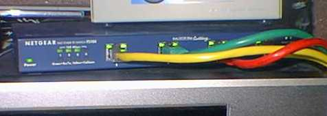
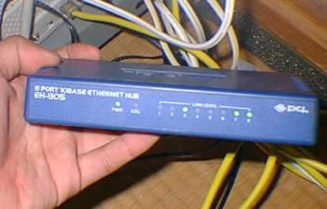

ネットワーク機器
100BASE-TX Swtiching HUB
|

NETGEAR FS104
|
なぜかSofmapで１万円で売っていて、友人にそそのかされて買ってしまいました。ということで、サーバー、ＣＤ−Ｒ焼き機、メインマシンはこいつに１００ＢＡＳＥで直結しています。うちの設備の中では一番威張れる設備でしょう。最近はメルコやPCI-Planetから安いハブが出たのであまり威張れるもんじゃありませんが。ま、それでもあまり持っているもんじゃないです。
100BASEの理論値なら10MBytes/sよりも高速なはずなので、ハードディスクにアクセスするのと似たような速度が得られるはずです。確かに10BASEよりも高速です。
10BASE-T Shared HUB周辺
|

PCi PLANET EH805
|
４ポートでは当然うちのＰＣをすべてつなぐことはできないので、のこりは10BASE-TのダムHUBをつないで対応しています。また、階下でノートパソコンを使うために階段にLANケーブルをはわせて、一階に２本LANケーブルを引いています。二本引いているのは、兄が帰ってきたときにケーブルを取り合うからだったりします。
右側の写真のが使用形態。後ろの白いのがダイヤルアップルーターです。エレコムのViA100P6010。ソフマップで一番安かったから買いました。古河電気のMuchoのOEMなんですが、正直なところ別の高機能ルータにすればよかったと後悔しています。
ルーターから出ている青い線はTAへと向かっています。ISDNのケーブルはLANケーブルで代用。問題ないみたいですね(笑)
戻る
|